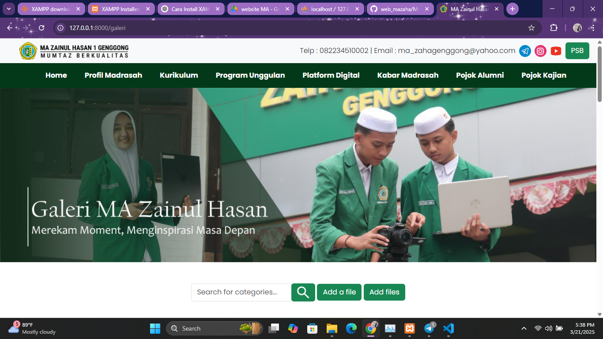
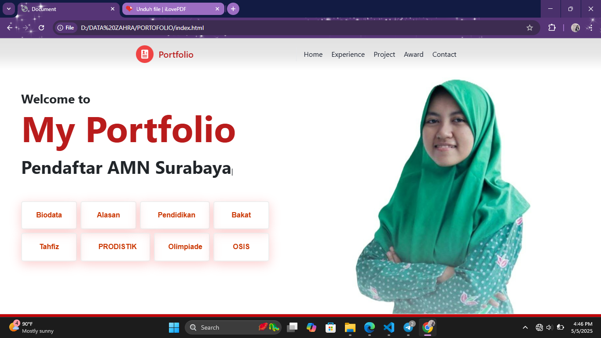

Website PSYCHIC
Sarana Tes Psikologi (Minat Bakat) berdasarkan metode RIASEC yang dikemukakan oleh Dr. John Holland menggunakan Laravel versi 8. Selengkapnya, silakan buka https://psychic.mazainulhasan1.sch.id. Jika tidak berhasil, tandanya server masih dilakukan maintenance. Silakan coba lain kali

Website Resmi MA Zainul Hasan 1 Genggong
Saya bergabung dalam tim developer website madrasah. Selengkapnya, silakan buka https://web.mazainulhasan1.sch.id.

Website Portofolio
Website Portofolio yang sedang Anda kunjungi sekarang merupakan hasil karya Sidqiana Azzahra sebagai pendaftar AMN Surabaya.